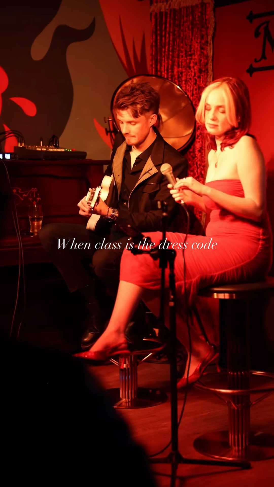
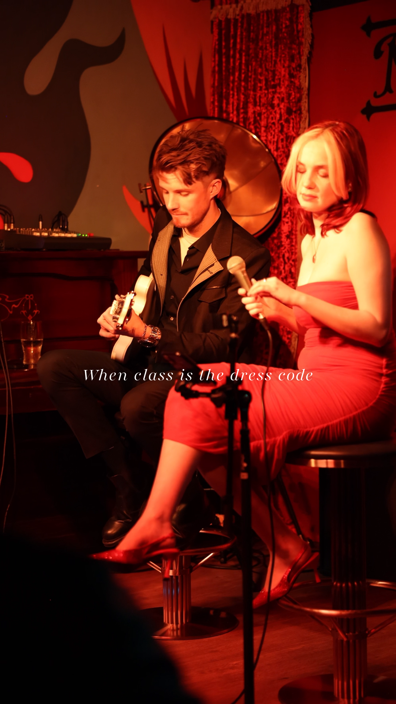
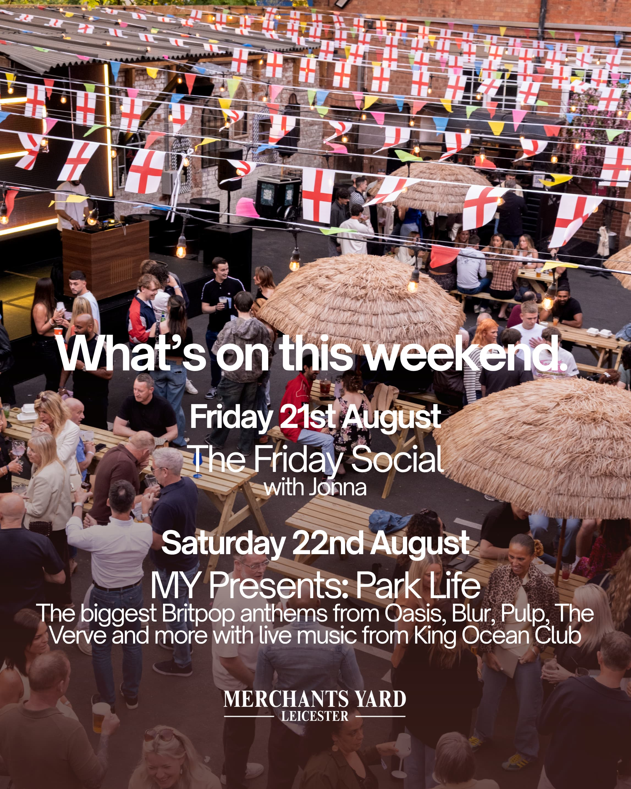
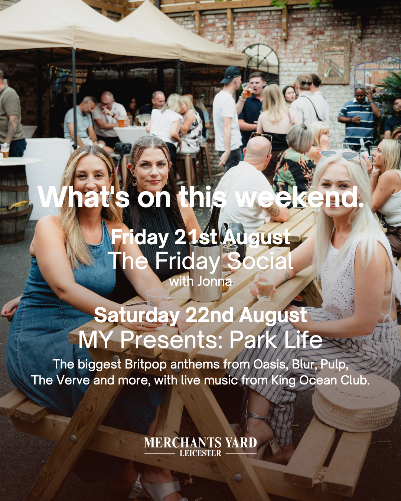
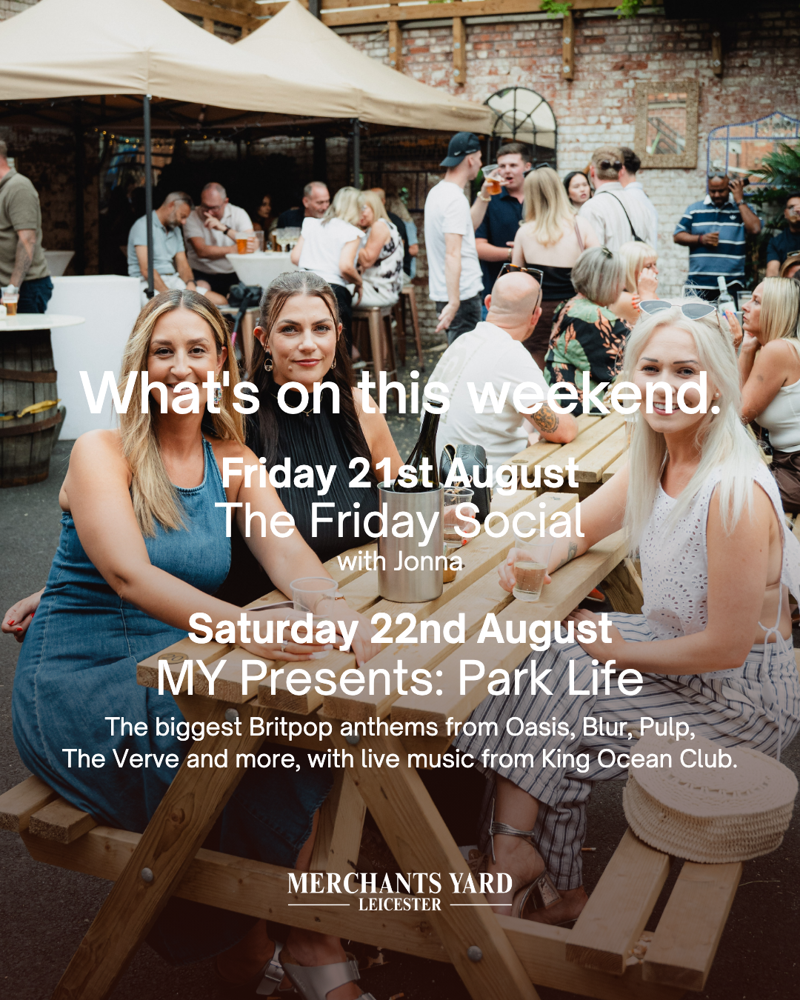
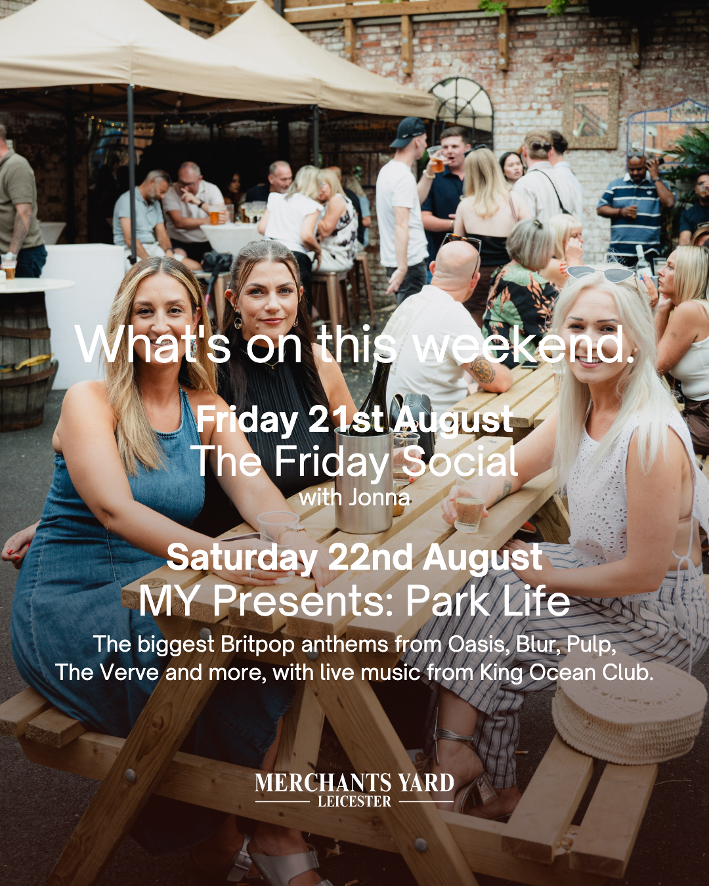

Original on the left, candidate on the right, both full frame. Text is set at the exact height and position measured off the posted original, so the only thing changing is the typeface.
Left is the real posted reel frame. Right is the same scene from the source clip with the candidate set on it.
C my pick — Playfair var · optical size 900 · weight 400 · wide axis · tracked 8 · 624px wide vs OG 626px · stroke 0.97

D — Playfair var · optical size 300 · weight 300 · wide axis · tracked 8 · 625px vs 626px · stroke 0.94

I — Didot Italic · stretched 12% · tracked 16 · 620px vs 626px · stroke 0.83
B — Playfair var · optical size 900 · weight 300 · wide axis · tracked 8 · 617px vs 626px · stroke 0.91
A widest — Playfair var · optical size 900 · weight 300 · wide · tracked 12 · 643px vs 626px · stroke 0.88
Left is your posted slide. Right is our template rendered at that weight, so this is exactly what next week would look like.
700 your instinct — Open Sauce Sans 700 Bold · what the template renders today


500 measured pick — Open Sauce Sans 500 Medium · closest to your posted slide by stroke measurement (0.99)

400 — Open Sauce Sans 400 Regular · noticeably lighter

The What’s On backgrounds differ because your posted slide used the bunting photo and our template render uses the balcony shot — judge the headline weight, not the picture. Say a letter and a weight and I rebuild both files.